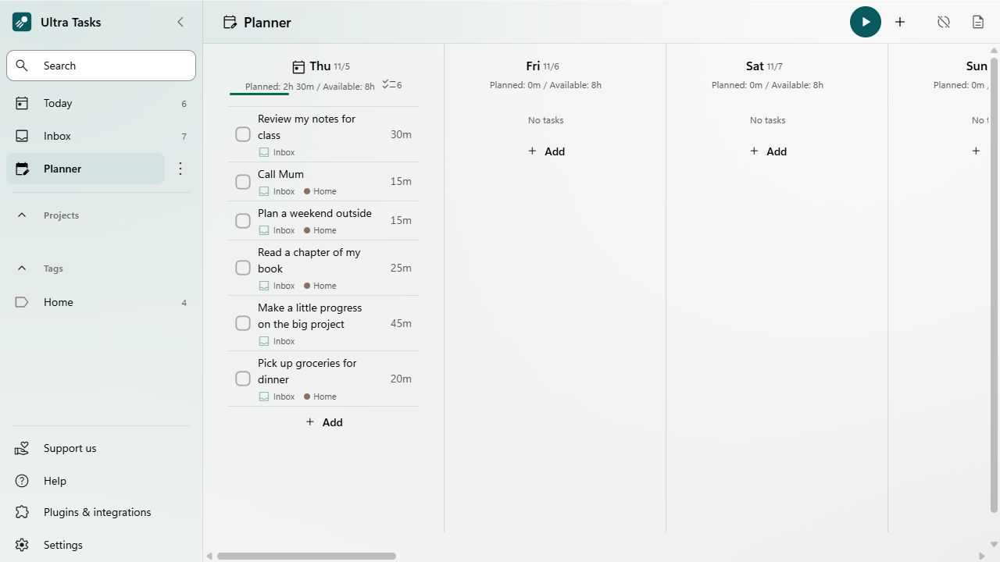

One list. Your whole life.
Capture a thought before it disappears. Give it a project, a tag, or a place in your day. Keep things as simple as you like.
A little calm for your everyday
A to-do list for your whole life. Bring the everyday things together, find a little focus, and keep your plans private.
Free & open source · No account needed
Life happens. Make a little room.
For the wonderfully everyday
Life doesn’t fit into a job title. Your to-do list shouldn’t have to, either. Make space for work, study, home, and the things you do just for you.
Capture a thought before it disappears. Give it a project, a tag, or a place in your day. Keep things as simple as you like.
See today clearly and give tomorrow a little thought. Break bigger plans into smaller steps, without turning life into a spreadsheet.
Built-in time tracking and focus tools help you settle into one task. Take a break, come back, and move at your own pace.
For students, parents, makers, dreamers—and yes, developers too. No technical skills required.
Your life is personal. Let’s keep it that way.
A grocery list can be personal. So can a new idea, a health goal, or the next chapter of your life. Privacy belongs in the everyday.
SuperSync uses end-to-end encryption (E2EE) for your task content. Your encryption password stays on your devices.
Technical metadata, such as IDs and timestamps, remains visible to the server.Your tasks live locally. Plan your day and track your time offline, with no account required for the core app.
The app’s source code is public under the MIT license. Read it, improve it, or just enjoy knowing it’s there.
Choose whether to sync at all. If you do, you can use your own WebDAV storage or self-host the SuperSync server.
A gentler kind of productive
Bring your tasks into the planner and see what’s realistic. The work, the appointments, the little things—give each a place, then get on with your day.

A few meaningful differences
There are plenty of ways to get organized. Here’s how the data choices compare.
| The things that matter |
|
Todoist | TickTick |
|---|---|---|---|
| Tasks & projects | Built in | Built in | Built in |
| Sync encryption | End to end with SuperSync1 | In transit & at rest2 | At rest3 |
| Where task data lives | Your device + optional sync | Provider’s cloud2 | Provider’s cloud3 |
| Bring your own sync server | Self-hostable | Provider-hosted | Provider-hosted |
Based on published security information, reviewed November 2026. See the provider policies for details.
1 Task content is encrypted; technical metadata is not. Other sync providers offer optional encryption. SuperSync is in beta; cross-client validation is ongoing. Ultra Tasks sync details · 2 Todoist security · 3 TickTick security. Features and policies can change.
Your day goes places
One calm home for your tasks is the vision—on your desk, in your bag, and wherever life takes you. Windows and macOS downloads are available today.
Ultra Tasks is in early development. Mobile, Linux, and hosted web releases are not available yet. Follow the releases
Why we’re here
We believe a good tool should give you back your attention. Something you can understand, make your own, and trust with the ordinary details of being human.
Ultra Tasks builds on the open-source foundation of Super Productivity, with a mission to make everyday planning feel clearer and more welcoming. It’s for anyone with things to do and a life beyond their list.
Built in the open. Come be a part of it.A few things you might wonder
Still curious? Come say hello on GitHub.
No. Download the app, add a task, and you’re on your way. Lists, projects, and the planner work for home, school, creative projects, or your day job. Developer integrations are optional.
The app is free and open source under the MIT license. Core tasks and time tracking need no account. If you choose a third-party sync service or host your own server, that service or infrastructure may have its own costs.
SuperSync encrypts your task content on your device using your encryption password before sending it to the server. The server does not receive that password. Technical metadata, including IDs and timestamps, remains visible. File-based providers offer encryption as an option. Sync is still being validated across clients, and SuperSync is in beta.
Yes. Your tasks are stored locally, and the core list, planning, and time-tracking features work without an internet connection. Sync and online integrations need a connection when you use them.
Ultra Tasks is an independent fork of Super Productivity, created by Johannes Millan and its contributors. It builds on that foundation with a focus on a clearer everyday interface. The projects are independently maintained; Ultra Tasks is not an official upstream release.
Your day, with a little more space
Make room for the things you need to do.
And the things you
love to do.
For Windows & macOS · Free & open source · Early development
Check release notes for installation details and current availability